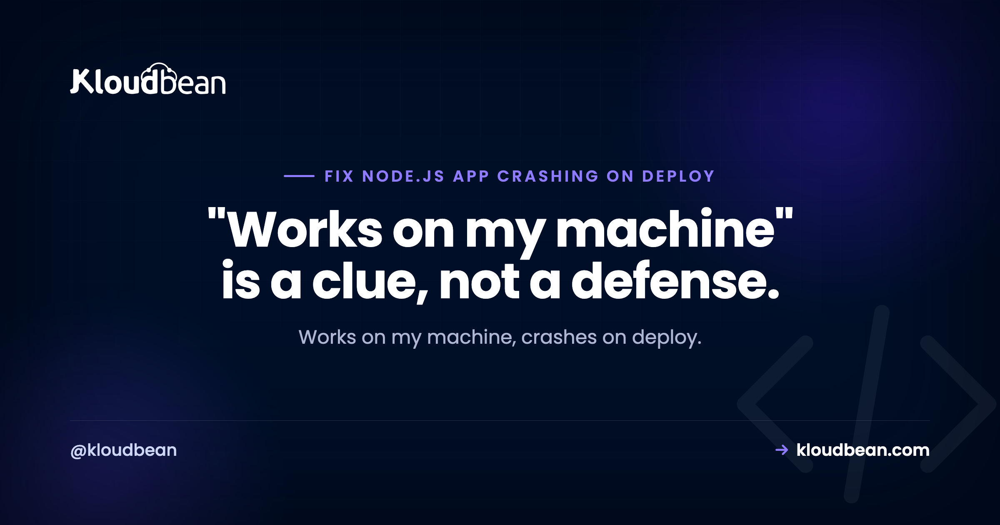

Node App Crashes on Deploy but Works Locally: A Debugging Field Guide

Your Node app runs beautifully on your laptop, you deploy, and it immediately falls over. This is one of the most common and most solvable situations in backend work, because "works locally, crashes on deploy" is nearly always the same thing wearing different masks: your production environment isn't your development environment. Different config, a different OS, a different Node version, different dependencies installed. This is a field guide to finding the specific gap and closing it, starting with the log that already holds the answer.
Because production differs from your machine in ways your code assumed away. The frequent causes: a missing environment variable, a build or start command that didn't run, a dependency that lives in devDependencies, a filename case bug that only breaks on Linux, an app not reading process.env.PORT, or a database that's unreachable from production. Read the deploy logs first, they name the error, then reproduce the production setup locally to confirm the fix.
First: read the deploy logs
Before theorizing, look. A deploy has two log surfaces and the error is in one of them: the build log (install and build steps) and the runtime log (your app starting and crashing). If the build failed, you'll see it there, a failed npm ci, a TypeScript error, a missing file. If the build passed but the app dies on boot, the runtime log has the stack trace. Whatever the crash is, it's almost certainly written down already. The rest of this guide is really about recognizing which error you're looking at.
The environment gap: why "works locally" means little
Your dev machine is a very forgiving place. It has every dependency you've ever installed, environment variables you set months ago and forgot, a case-insensitive filesystem (on macOS and Windows), whatever Node version you happen to run, and the database sitting right there on localhost. Production has none of that unless you arranged it. So a deploy crash is usually the moment one of those hidden assumptions gets tested for real. Name the assumption, fix the gap.
The usual culprits, ranked
- Missing environment variables. The number-one cause. The app reads a config value that isn't set in production, and throws on boot. Set every required variable per environment, and fail loudly at startup if one is missing. See environment variables done right.
- Build or start command didn't run. A
Cannot find module 'dist/index.js'means the build never produced the output. Confirm the build runs on deploy and the start script points at real files. See Cannot find module, and if the app came out of an AI builder, check what belongs in the build command versus the start command, because those two fields get swapped constantly. - Missing dependency in production. A runtime package sitting in
devDependenciesis skipped by a production install. Move it todependencies. - Case sensitivity on Linux.
require("./User")vs a file nameduser.jsworks on your Mac and fails on the Linux server. Match the case exactly. - Port binding. The app hardcodes a port or ignores
process.env.PORT, so it binds wrong or clashes. See EADDRINUSE. - Database unreachable. An
ECONNREFUSEDbecause the code points at127.0.0.1instead of the production database host. See ECONNREFUSED. - Out of memory. A smaller production box hits a limit your laptop never did. See heap out of memory.
Reproduce production locally (the move that saves hours)
You don't have to debug in production. Recreate its conditions on your machine and the crash usually reproduces on the spot:
# Simulate a production install and run
export NODE_ENV=production
rm -rf node_modules
npm ci --omit=dev # install exactly like production (no devDependencies)
npm run build # run the real build step
node dist/index.js # run the built output, not your dev serverIf it crashes here, congratulations, you can now iterate locally instead of pushing commit after commit hoping one sticks. Nine times out of ten this surfaces the missing dependency, the build gap, or the missing env var immediately. Set the same environment variables your production platform uses and you've closed most of the distance.
Node version and native modules
Two subtler gaps worth checking. First, the Node version: if you develop on Node 20 and the server runs Node 18, syntax or APIs available locally can fail in production. Pin the version so both agree, and declare it so the platform knows:
// package.json
{
"engines": { "node": ">=20.0.0" }
}Second, native modules. Packages with compiled binaries (things like bcrypt or sharp in some setups) are built for a specific OS and architecture. Committing node_modules from your Mac and running it on a Linux server is a classic way to get a native-module crash. The fix is the same as always: don't commit node_modules, let the server run a clean npm ci so binaries build for the right platform.
Prevention: fail loudly, not silently
The best cure is a deploy that tells you immediately when something's off. Three habits do most of the work. Validate required environment variables at startup and exit with a clear message if one is missing, so you get "MISSING DATABASE_URL" instead of a vague crash. Run your build on the server through CI/CD with visible logs, so a bad build shows up in the log rather than as a mystery. And add a health check so the platform knows whether the app actually came up. Together they turn "it crashed, no idea why" into "the log said exactly what was missing."
| Symptom on deploy | Cause | Where to fix it |
|---|---|---|
| Crashes reading config | Missing env var | Set vars per environment |
| Cannot find module 'dist/...' | Build didn't run | Cannot find module guide |
| Works local, fails on server | Case sensitivity (Linux) | Match filename case |
| ECONNREFUSED on boot | Wrong DB host (localhost) | ECONNREFUSED guide |
| EADDRINUSE / wrong port | Not reading process.env.PORT | EADDRINUSE guide |
| Killed under load | Out of memory on smaller box | Heap out of memory guide |
How Kloudbean makes deploy failures visible
Most of the pain here is a deploy that fails quietly. Kloudbean deploys from a GitHub push through managed CI/CD with live build logs, so a failed install or build shows up in the console as it happens, not as a silent dead app. Environment variables are set per app so production stops falling back to your laptop's values, your Node app runs always-on under PM2 so a crash and its logs are visible, and a managed database sits right next to your app in the same account so the localhost trap doesn't apply. You still own your code's bugs, a genuine error will still crash, but the environment gaps that cause "works locally, crashes on deploy" are largely designed out.

Same area, different problem
This guide is a map to the specific fixes. Dig into environment variables done right (the top cause), Cannot find module, ECONNREFUSED, EADDRINUSE, PM2 restart loops, and heap out of memory. For a build that runs on every push, see CI/CD auto-deploy from GitHub.
Read the log, fix it, ship again.
Build logs stream live in the console, deployment history keeps what happened, and the logs viewer separates app errors from web requests, so a failed start is a five-minute read rather than a guessing game.
- ✓ Live build logs
- ✓ Deployment history
- ✓ Logs viewer
- ✓ Managed process restarts
- ✓ Automatic backups
- ✓ Git deploy
FAQ
Why does my Node app work locally but crash when deployed?
Because production isn't your machine. It lacks the environment variables you set locally, may run a different Node version, installs only production dependencies, uses a case-sensitive Linux filesystem, and reaches the database over a network instead of localhost. A deploy crash is one of those differences getting tested. Read the deploy log to see which.
How do I debug a crash that only happens on deploy?
Reproduce production locally: set NODE_ENV=production, run npm ci --omit=dev, run your build, and start the built output with node dist/index.js. That mirrors the production install and usually reproduces the crash on your machine, where you can fix it quickly instead of pushing commit after commit.
What's the most common reason a Node app crashes on deploy?
A missing environment variable. The app reads a config value that exists on your laptop but was never set in production, and throws on startup. Set every required variable per environment and validate them at boot with a clear error message, so a missing one is obvious instead of a cryptic crash.
Why does it say 'Cannot find module' only after deploying?
Usually the build didn't run on the server (so dist is missing), a runtime package is stuck in devDependencies and skipped by the production install, or a filename case mismatch fails on Linux. Confirm the build runs on deploy, move runtime packages to dependencies, and match import casing exactly.
Could a Node version difference cause a deploy crash?
Yes. If you develop on a newer Node version than the server runs, syntax or APIs that work locally can fail in production. Pin the version with an engines field in package.json and make sure the platform runs the same major version. Native modules also need a clean install on the server so binaries match its platform.
How do I stop deploys from failing silently?
Make failures loud. Validate required env vars at startup and exit with a clear message, run the build through CI/CD with visible logs so a bad build is obvious, and add a health check so the platform knows if the app actually started. On Kloudbean the live build logs and per-environment config surface these problems as they happen.